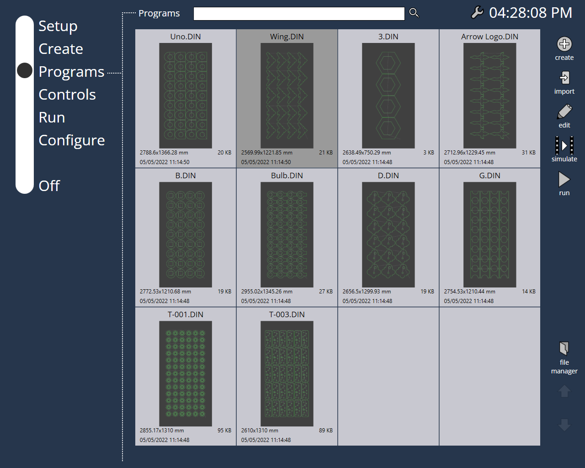

Gestión de archivos
Importar
Para importar archivos, puede usar directamente el botón Importar en la parte superior derecha de la pantalla. Le permite importar con un mínimo de clics.

Gestor de ficheros
Todas las demás operaciones con ficheros se realizan mediante la opción Gestor de ficheros (disponible en la parte derecha de la pantalla).
Las siguientes funciones están disponibles en las operaciones con ficheros:
-
Renombrar : esta orden le permite cambiar el nombre del programa seleccionado.Puede escribir el nuevo nombre en el cuadro de diálogo que aparece.
-
Eliminar : utilice este interruptor para eliminar el programa seleccionado.
-
Clonar : este comando le permite hacer una copia exacta de los programas que ha seleccionado. Seleccione uno o más programas y luego pulse este botón para crear una copia de los programas seleccionados. Cuando se clona más de un programa, se abre un cuadro de diálogo Clonar archivos que le pregunta si quiere clonar el número seleccionado de archivos. Al pulsar la marca OK, los archivos se clonan. En general, el nombre del archivo clonado tendrá un número después del nombre de la pieza, separado por una virgulilla (por ejemplo, si clona una pieza llamada P5, el nombre de la pieza clonada será P5~1).
-
Exportar : cuando se pulsa, esta orden abre el cuadro de diálogo Exportar archivo, mediante el cual se elige la ubicación para exportar el o los archivos seleccionados.
-
Importar : puede importar programas utilizando esta función. Este botón abre el cuadro de diálogo Importar archivos, con el cual puede seleccionar uno o más archivos de programa o de programa directo para la importación. Una vez seleccionados los archivos, pulse la marca OK en el cuadro de diálogo para importar el (los) archivo(s). Si el nombre del o de los archivos que intenta importar ya existe, aparecerá un mensaje de advertencia como el que se ve en la imagen de abajo preguntando si desea sustituir el o los archivos existentes. //Esta opción está presente fuera del menú de gestor de archivos.

-
Organizar : la selección en la cabecera de programas en la parte superior se abre esta opción. Al pulsar este botón, aparece un cuadro de diálogo como el que se muestra en la siguiente imagen.

La página de edición muestra todos los programas de la carpeta Programas. Puede crear carpetas y estructurar sus datos dentro de esta carpeta. Puede crear nuevas carpetas usando la orden nueva carpeta. Esto creará una nueva carpeta dentro de la carpeta Programas. A la izquierda, puede ver la sección Seleccionar carpeta que muestra la estructura de directorios. Puede elegir una carpeta del árbol y se mostrará el contenido de la carpeta seleccionada en la página de edición.También puede clasificar los archivos en la carpeta por medio de las opciones proporcionadas en la sección Clasificar por.Para clasificar por nombre en orden ascendente, seleccione Nombre [A..Z] y para clasificar por nombre en orden descendente, seleccione Nombre [Z..A].
Más recientes primero muestra todos los programas que se crearon recientemente y Más antiguos primero displays the programs sorted in the ascending order of the created date.Usando Mostrar miniaturas, la visualización de miniaturas se puede activar o desactivar para los programas en la página de edición. Utilice el botón eliminar para quitar un subdirectorio.
| Solo se puede eliminar un subdirectorio que está vacío.Pulse hecho para aplicar los cambios y salir. |